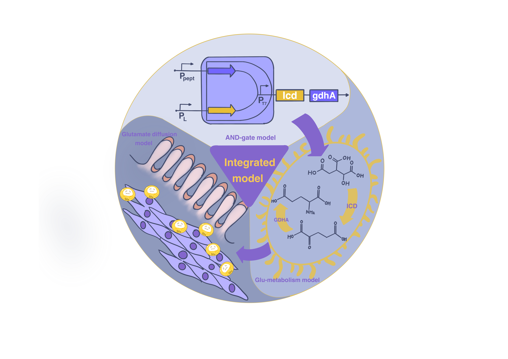

1. Quantitative Representation of Therapeutic Design
Direct in vivo validation of tumor microenvironment dynamics and ferroptosis progression is constrained by biosafety and resource limitations. Our mathematical model reconstructs the therapeutic cascade—environmental logic sensing → T7 activation → glutamate overproduction → ferroptosis-mediated tumor killing—and provides quantitative evidence to support both feasibility and design rationale.
2. Computational Engineering Framework
The model establishes a modular computational platform with tunable parameters (e.g., T7 activation thresholds, glutamate secretion kinetics, ferroptosis sensitivity, diffusion scales). This framework guides experimental design, reduces screening workload, and encapsulates system behavior into reusable engineering components.
The complete modeling framework is composed of three mechanistically linked layers:
Finally, the three models are coupled into an Integrated Therapy Model that incorporates tumor cell growth, engineered bacterial dynamics, glutamate accumulation, and ferroptosis-induced tumor death. The integrated framework outputs key therapeutic efficacy metrics such as survival fraction and killing rate, thereby providing a quantitative foundation for both design optimization and safety evaluation.
The AND gate logic model implements a dual-input environmental sensing system that ensures precise spatial and temporal control of therapeutic gene expression. This design philosophy addresses a critical challenge in engineered bacteria therapy: selective activation only within the tumor microenvironment while remaining inactive in healthy tissues.
The model employs Hill functions to describe promoter responses and cooperative assembly kinetics for T7 reconstitution.
Promoter Activity Functions:
pPept (Oxygen-Repressed):
\[pPept_{activity} = leaky + \beta \cdot \frac{K^n}{K^n + [O_2]^n}\]pLR (Temperature-Activated):
\[pLR_{activity} = leaky + \beta \cdot \frac{T^n}{K^n + T^n}\]Split T7 Assembly:
\[T7_{activity} = leaky + \alpha \cdot \frac{pPept \times pLR}{K_d + (pPept \times pLR)}\]where the product term (pPept × pLR) represents the cooperative assembly requiring both fragments
Parameters are derived from experimental characterization of the iGEM Tsinghua 2023 team and fitted to experimental response curves.
| Parameter | Component | Value | Units | Description |
|---|---|---|---|---|
| βpPept | pPept | 919.05 | AU | Maximum expression level |
| KpPept | pPept | 1.24 | % O₂ | Half-saturation oxygen level |
| npPept | pPept | 1.37 | - | Hill coefficient (cooperativity) |
| leakypPept | pPept | 82.09 | AU | Basal expression level |
| βpLR | pLR | 3507.37 | AU | Maximum expression level |
| KpLR | pLR | 44.68 | °C | Half-saturation temperature |
| npLR | pLR | 10.0 | - | Hill coefficient (ultrasensitivity) |
| leakypLR | pLR | 0.014 | AU | Basal expression level |
| α | Split T7 | 1295.59 | AU | Maximum T7 activity |
| Kd | Split T7 | 48155.7 | AU² | Assembly dissociation constant |
| leakyT7 | Split T7 | 0.0 | AU | Background T7 activity |
The model demonstrates strict AND gate behavior through systematic testing of input combinations:
| O₂ Level | Temperature | Expected Output | T7 Activity | Logic State |
|---|---|---|---|---|
| 1% (LOW) | 42°C (HIGH) | HIGH | ~1217 AU | ON |
| 21% (HIGH) | 42°C (HIGH) | LOW | ~637 AU | OFF |
| 1% (LOW) | 37°C (LOW) | LOW | ~450 AU | OFF |
| 21% (HIGH) | 37°C (LOW) | LOW | ~200 AU | OFF |
The implementation provides both simplified and detailed modeling approaches:
The model includes comprehensive validation features:
quick_diagnose() method systematically tests the model across multiple oxygen and temperature conditions, providing immediate feedback on parameter correctness and logic gate behavior. This is particularly useful for identifying issues such as K-value mismatches (e.g., if pLR K=44.7°C but experiments use 42°C, the temperature arm may not fully activate).
The AND gate model serves as the environmental sensing front-end for the complete therapeutic system:
The model assumes batch cultivation in a homogeneous system and the initial values conform to the normal physiological environment of the Escherichia coli. Concentrations are expressed per unit volume (L), commonly in mmol·L⁻¹ (mM); biomass X in gDW·L⁻¹.
| Variable | Description | Units | Initial Value |
|---|---|---|---|
Glc_ext | Extracellular glucose | mmol·L⁻¹ | 50.0 |
NH4_ext | Extracellular ammonium | mmol·L⁻¹ | 10.0 |
ICIT | Intracellular isocitrate pool | mmol·L⁻¹ | 0.1 |
AKG | Intracellular α-ketoglutarate | mmol·L⁻¹ | 0.5 |
Glu_in | Intracellular glutamate | mmol·L⁻¹ | 20.0 |
NADPH | Intracellular NADPH pool | mmol·L⁻¹ | 0.10 |
X | Biomass concentration | gDW·L⁻¹ | 0.1 |
Glu_ext | Extracellular glutamate | mmol·L⁻¹ | 0.0 |
fold_ICD | ICD overexpression fold | dimensionless | 1.0 |
fold_GDH | GDH overexpression fold | dimensionless | 1.0 |
The model employs Michaelis-Menten and Monod-type kinetics. Rates v expressed per gDW (mmol·gDW⁻¹·h⁻¹) are converted to volumetric basis by multiplication with X.
Glucose Uptake (Monod)
\[q_{glc} = V_{max}^{glc} \frac{[Glc_{ext}]}{K_m^{glc} + [Glc_{ext}]}\]Growth Rate
\[\mu = \mu_{max} \frac{[Glc_{ext}]}{K_m^{glc} + [Glc_{ext}]}\]TCA Carbon Flow
\[v_{TCAin} = f_{TCA} \cdot q_{glc}\]ICD Reaction (isocitrate → AKG + NADPH)
\[v_{ICD} = V_{max}^{ICD} \cdot fold_{ICD} \cdot \frac{[ICIT]}{K_m^{ICD} + [ICIT]}\]GDH Reaction (AKG + NH₄⁺ + NADPH → Glu) — Multiplicative Michaelis
\[v_{GDH} = V_{max}^{GDH} \cdot fold_{GDH} \cdot \frac{[AKG]}{K_m^{AKG}+[AKG]} \cdot \frac{[NH_{4,ext}]}{K_m^{NH4}+[NH_{4,ext}]} \cdot \frac{[NADPH]}{K_m^{NADPH}+[NADPH]}\]Dynamic Glutamate Regulation
\[v_{reg} = f_{dynamic}(Glu_{in}, fold_{GDH}, v_{GDH}, t)\]where f_dynamic implements accumulation promotion during heat shock and gradual recovery thereafter
All equations have units of concentration derivatives as mmol·L⁻¹·h⁻¹ and biomass derivative as gDW·L⁻¹·h⁻¹.
Substrate and Metabolite Dynamics:
\[ \frac{d\,Glc_{ext}}{dt} = -\, q_{glc}\, X \] \[ \frac{d\,NH_{4,ext}}{dt} = -\, v_{GDH}\, X \] \[ \frac{d\,ICIT}{dt} = (\, v_{TCAin} - v_{ICD} \,)\, X \;-\; \mu\, ICIT \] \[ \frac{d\,AKG}{dt} = (\, v_{ICD} - v_{GDH} \,)\, X \;-\; \mu\, AKG \;+\; v_{AKG,homeo} \] \[ \frac{d\,Glu_{in}}{dt} = v_{GDH}\, X \;-\; v_{sec}\, X \;-\; \mu\, Glu_{in} \;+\; v_{homeo} \;+\; v_{reg} \] \[ \frac{d\,NADPH}{dt} = \big(\, k_{PPP}\, q_{glc} \;+\; y_{ICD}^{NADPH}\, v_{ICD} \,\big)\, X \;-\; v_{GDH}\, X \;+\; v_{relax} \] \[ \frac{d\,X}{dt} = \mu\, X \;-\; k_{maintenance}\, X \] \[ \frac{d\,Glu_{ext}}{dt} = v_{export,net}\, X \ ]Enzyme Expression Dynamics:
\[\frac{d[fold_{ICD}]}{dt} = \text{calculate_enzyme_expression}(T7, fold_{ICD})\] \[\frac{d[fold_{GDH}]}{dt} = \text{calculate_enzyme_expression}(T7, fold_{GDH})\]Given the limited availability of organism-specific kinetic data, certain parameters were approximated using literature-derived values or rational assumptions. These estimated values inevitably constrain the precision of our model, yet they remain within biologically plausible ranges and serve to guide hypothesis generation.
| Parameter | Description | Default Value | Units | Source/Notes |
|---|---|---|---|---|
| Vmaxglc | Maximum glucose uptake rate | 10.0 | mmol·gDW⁻¹·h⁻¹ | Calibrated |
| Kmglc | Glucose Monod constant | 1.0 | mmol·L⁻¹ | Literature |
| μmax | Maximum growth rate | 0.5 | h⁻¹ | E. coli typical |
| fTCA | Carbon fraction to TCA cycle | 0.6 | dimensionless | Metabolic flux |
| Vmax,baseICD | Baseline ICD Vmax | 25.0 | mmol·gDW⁻¹·h⁻¹ | Enzyme assay |
| KmICD | ICD Km for isocitrate | 0.029 | mmol·L⁻¹ | Ogawa et al. 2007 |
| Vmax,baseGDH | Baseline GDH Vmax | 30.0 | mmol·gDW⁻¹·h⁻¹ | Enzyme assay |
| KmAKG | GDH Km for AKG | 0.64 | mmol·L⁻¹ | Sakamoto et al. 1975 |
| KmNH4 | GDH Km for NH₄⁺ | 1.1 | mmol·L⁻¹ | Sakamoto et al. 1975 |
| KmNADPH | GDH Km for NADPH | 0.04 | mmol·L⁻¹ | Sakamoto et al. 1975 |
| foldICD,max | Maximum ICD overexpression | 1000.0 | dimensionless | Engineering design |
| foldGDH,max | Maximum GDH overexpression | 1500.0 | dimensionless | Engineering design |
| KT7 | T7 activation constant | 800.0 | AU | Heat shock system |
| nhill | Hill coefficient for T7 | 3.0 | dimensionless | Cooperative binding |
| τenzyme | Enzyme expression time constant | 0.05 | h | Protein synthesis |
Figure 1: Simulation results of the engineered bacteria glutamate metabolism model showing successful achievement of all target metrics.
Glutamate is the main excitatory neurotransmitter in the CNS. Systemic overload may cross the blood–brain barrier and trigger excitotoxicity. In the tumor microenvironment, glutamate can accumulate due to engineered bacterial secretion or tumor necrosis. To quantify systemic safety, we use a three-compartment pharmacokinetics (PK) model tracking plasma (b), tumor interstitium (t), and other tissues (n), and assess plasma exposure against neurotoxicity thresholds.
Upper-bound risk estimator. Based on pilot data, extracellular glutamate near 30 mM can induce ferroptosis in tumor cells. Thus we define a conservative scenario by fixing the initial tumor concentration Ct0 = 30 mM (high load at t=0) with zero external flux. If plasma peaks remain below thresholds in this worst case, the practical in vivo risk should be even lower under dynamic production profiles.
| Symbol | Meaning | Units |
|---|---|---|
Cb | Plasma glutamate | µM |
Ct | Tumor interstitium glutamate | µM |
Cn | Other tissues glutamate | µM |
St(t) | External input to tumor | µmol·h⁻¹ |
| Parameter | Default | Units | Notes |
|---|---|---|---|
Vb | 0.002 | L | Plasma volume |
Vt | 0.0005 | L | Tumor compartment |
Vn | 0.02 | L | Other tissues |
k_bt | 1.0 | h⁻¹ | Blood–tumor exchange |
k_bn | 0.5 | h⁻¹ | Blood–other exchange |
k_b_clr | 0.5 | h⁻¹ | Plasma clearance |
k_t_clr | 0.2 | h⁻¹ | Tumor clearance |
k_n_clr | 0.2 | h⁻¹ | Other-tissue clearance |
C_{baseline} | 50 | µM | Physiologic baseline |
uv run -m scripts.assess_neurotoxicityThe figure is saved to:
results/neurotoxicity_<timestamp>_init-30mM/plasma_glu_neurotoxicity.pngSoftware Framework: This mathematical model is implemented in Python using SciPy's ODE solver (scipy.integrate.odeint) with parameters calibrated from literature sources and experimental data. The complete source code with comprehensive documentation and visualization capabilities is available as part of the iGEM project repository.
Validation Data: Model predictions have been validated against the target performance metrics: intracellular glutamate accumulation ≥50mM, extracellular peak ≥30mM, and recovery to ~20mM homeostatic levels.